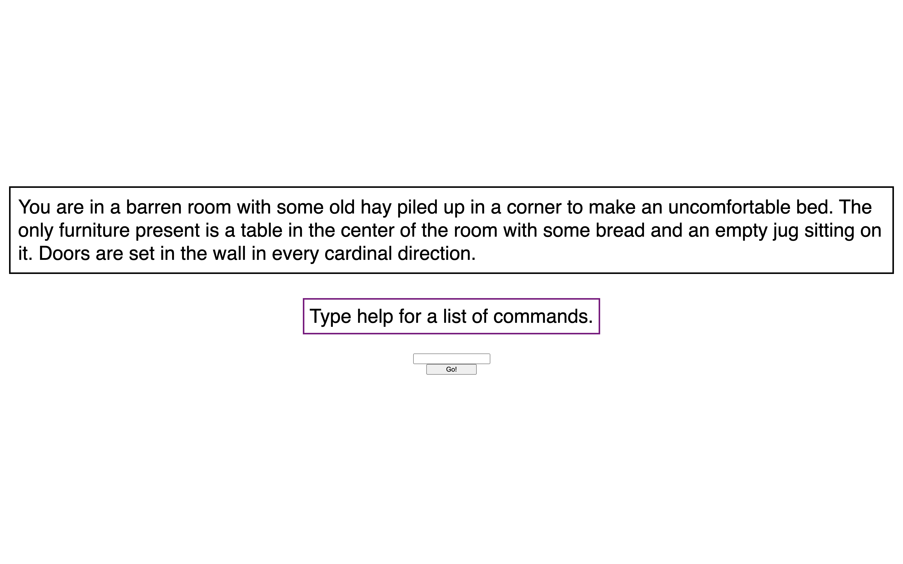
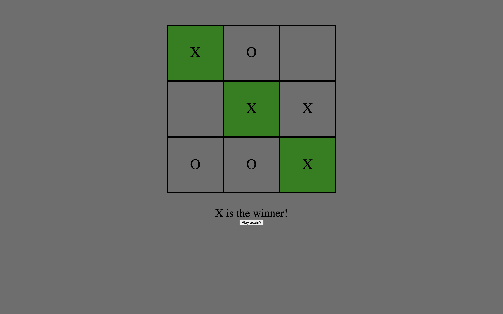
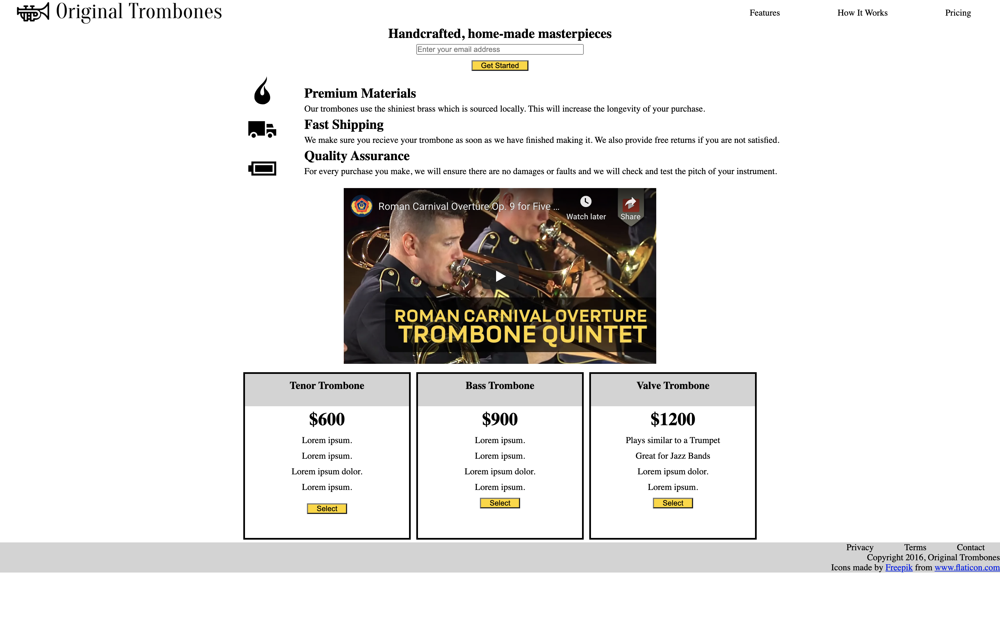

This is a choose-your-own-adventure game I created. This project got me used to the DOM method of manipulating HTML with javascript.
Link to code

This a small game of tic-tac-toe. This project was done with a partner to demonstrate my mastery of git usage in a workflow, and further expanded my understanding of the DOM method.
Link to code

This is a small responsive landing page that was made to practice responsive design. It utilized the mobile-first methodology of web design.
Link to code